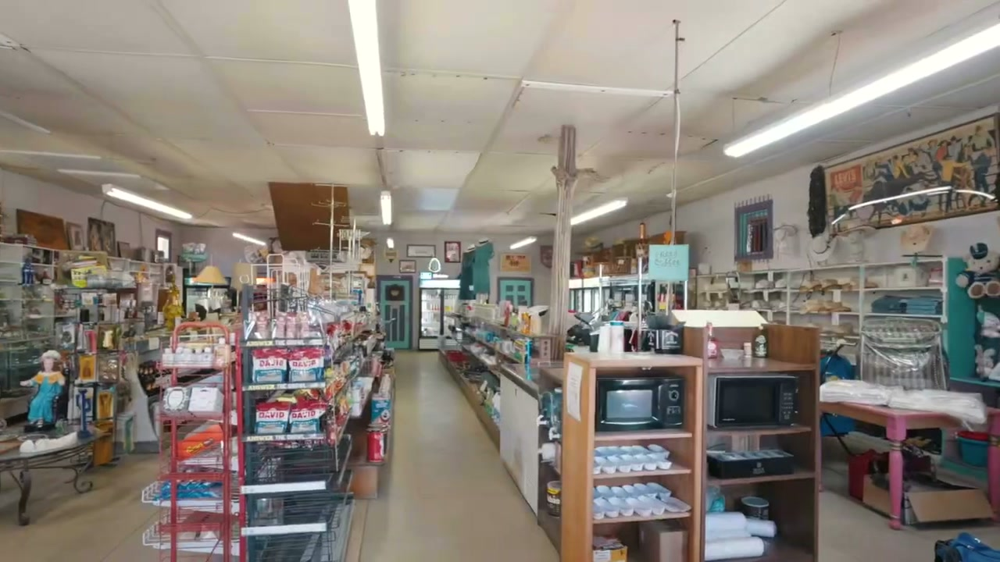
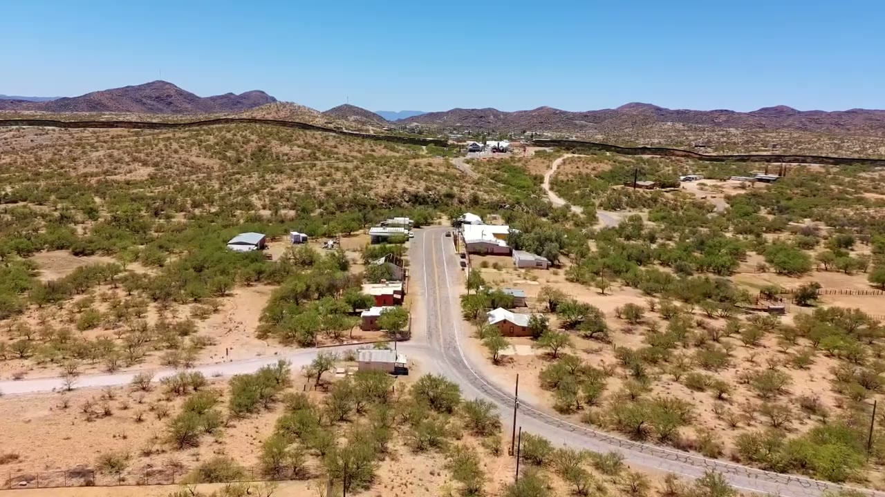

The historic Sasabe Store is the general store at the center of Sasabe, Arizona, in a building dating to around 1920 — and it is part of the property now on the market: about 441.59 acres across three parcels, listed at $3,500,000.
The sign on the building reads “Sasabe Store — Since 1920.” It is the kind of store a small border town runs on: a little bit of everything, in one place, for the people who live there and the people passing through.
What the Store Is
The Sasabe Store is a general store, not a specialty shop. The signs on the front of the building, seen in the photos from the listing video, list groceries, beer, wine and liquor, ice, gas, and firewood, along with western hats and tee shirts, lottery, food stamps, a copy machine, and overnight parking. The signs are in English and Spanish, and one notes the store buys and sells both pesos and dollars.
Inside, the store is stocked the same way — shelves of groceries and everyday goods, coolers, and household items, with a counter up front. That is what the video stills show, and a buyer should see the store in person to judge its condition and how it is running now.
Why the Store Matters to Sasabe

Sasabe is a small, living community, and it is a long drive to the nearest town of any size. A general store in a place like that is not decoration. It is where people pick up groceries, gas, and ice, and where travelers stop on the way to and from the border crossing.
That is also what makes the store different from a plain old building in a listing. It is still part of daily life in Sasabe, along with the Hill Top Bar and the United States Post Office, with its own ZIP code, 85633. A buyer who takes on this property is taking on a working town center, not just acreage.
What Is For Sale
The store is not sold on its own. It is part of one offering, listed July 29, 2026: three parcels totaling approximately 441.59 acres in Sasabe, Arizona, in southern Pima County, right on the U.S.–Mexico border, listed at $3,500,000.
The offering includes the historic Sasabe General Store, the Hill Top Bar, and the United States Post Office, plus tenant-occupied residential homes — houses on the property where people currently live as tenants — and vacant land around the town center.
Where It Is

The store sits in the town center of Sasabe, on State Route 286. Sasabe is an unincorporated community, which means it has no town government of its own. It is part of Pima County, not a city or a town with a mayor and a council. State Route 286 connects it with State Route 86 near Three Points, approximately 45 miles to the north.
The land around the town is ranch country and desert, with the Buenos Aires National Wildlife Refuge and working ranches around it. The best way to judge the store, and the property around it, is to go there: drive State Route 286, walk the town center, and look at the buildings in person.
What a Buyer Should Check First
Before anything else, a buyer should check the things that decide whether this property works for what they want to do with it.
The store building itself. It is an old building, dating to around 1920. Its condition, and what it would take to keep it running, should be checked on site, not assumed from photos.
Access and easements. There are border-construction easement and federal access issues on the property. A buyer should find out exactly what those cover and what they allow before making plans.
Boundaries, zoning, and permitted uses. Check the acreage, the parcel boundaries, the zoning, and what the land can actually be used for. What is allowed on ranch land in unincorporated Pima County is not the same as what is allowed on a lot in town.
Utilities and other buildings. The offering includes old buildings and tenant-occupied homes. Their condition, and what utilities serve which parcel, should be checked on site.
None of this is a reason not to look. It is the reason to look carefully, with the listing agent, before deciding.
How to See It
To set up a visit, or to ask whether the listing is still available and what the next step is, contact the listing agent, Nathan Morrison, Century 21 Indie Realty.
Frequently Asked Questions
Is the Sasabe Store for sale?
Yes, as part of one offering. The historic Sasabe General Store is included in the listing of approximately 441.59 acres across three parcels in Sasabe, Arizona, listed at $3,500,000. It is not sold on its own.
How old is the Sasabe Store?
The store building dates to around 1920, and the sign on the building reads “Since 1920.”
What does the store sell?
It is a general store. The signs on the building list groceries, beer, wine and liquor, ice, gas, and firewood, along with western hats and tee shirts, lottery, food stamps, a copy machine, and overnight parking. A buyer should check in person how the store is running now.
Can I buy just the store, or just one parcel?
The offering is listed as one offering of three parcels together. Ask the listing agent about the current terms.
Is Sasabe still for sale?
Part of Sasabe is listed at $3,500,000, and the listing went live on July 29, 2026. Information in this article is current as of November 26, 2026. Contact the listing agent, Nathan Morrison, to make sure everything is still current.
This article is provided for general informational and educational purposes. Details are believed to be accurate, but are not guaranteed and should be independently verified. This article is not intended as legal, financial, or investment advice. All information is believed to be reliable but is not guaranteed. Buyers should independently verify all information, including acreage, improvements, utilities, zoning, boundaries, and permitted uses, during their own due diligence.